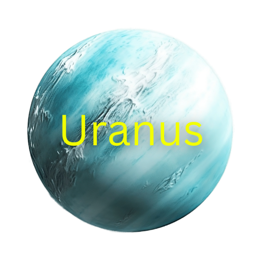

Uranus, the seventh planet from the Sun, is an ice giant known for its pale blue-green color, caused by methane in its atmosphere, and its unique tilt, which sets it apart from all other planets in the solar system. Unlike other planets that rotate upright or with slight tilts, Uranus spins on its side, with an axial tilt of about 98 degrees, making its seasons extreme and lasting over 20 Earth years each. Composed mostly of hydrogen, helium, and icy materials like water, ammonia, and methane, Uranus has a cold atmosphere with temperatures dropping as low as -371°F (-224°C), making it one of the coldest planets in the solar system. Though its faint ring system is less prominent than Saturn's, Uranus has 13 known rings and at least 27 moons, including Titania and Oberon. Its odd rotation and mysterious internal structure continue to intrigue scientists, offering clues about the dynamic processes that shaped the solar system